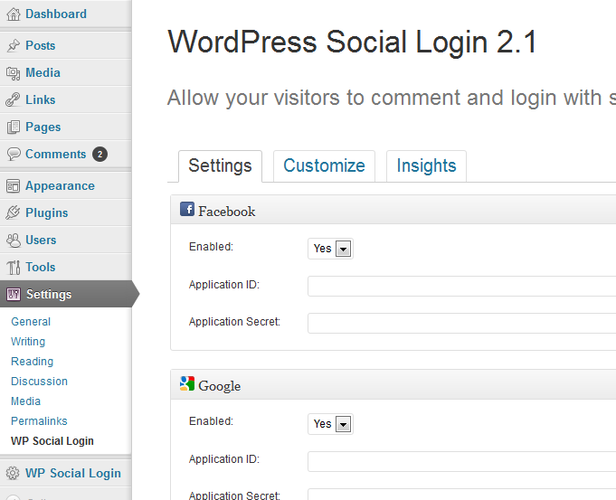
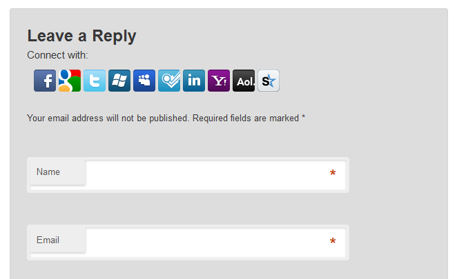
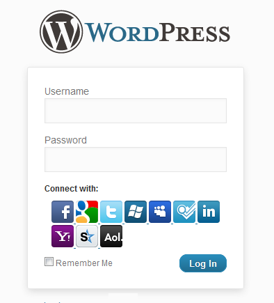

Overview
This plugin allow your visitors to register, login and comment with their accounts on social networks and identities providers such as Facebook, Twitter, Foursquare and Google.
PLEASE NOTE:
- This plugin is still in alpha stage and as such, should be used only for testing purposes.
- This plugin is made and tested on a default wordpress installation 3.2.1 without any extra add-ons,
Currenty Supported Providers are: Facebook, Google, Yahoo, Twitter, Windows Live, Myspace, Foursquare, Linkedin, and AOL.
Basically this plugin can be extended to support as many providers such as Gowalla, Last.fm, Vimeo, Viadeo, Tumblr, QQ, Sina and maybe more.
Also features can be extend to allow users to share their comments, reviews and other activities from your site to their friends via social networks,.
1. Configure
- Download, Unzip and drop the extention on /wp-content/plugins/ directory,
- As admistration, activate the plugin through the 'Plugins' menu in WordPress,
- Run Plugin Diagnostics to check some requirements,
- Then setup the providers you want to use
- To correctly setup these Identity Providers please carefully follow the help section on Allow users to sign on with {provider}?.
- If a Provider Satus is set to NO then users will not be able to login with this provider on you website.

2. Comment view
When you finish configuring the extention, any enabled provider icon will appear after on top of the comment form. under
Leave a Reply message.

3. Admin view
Same as Comment view.

4. Login flow
When a user click an icon, a popup will apprear where it will be redirected to the provider authentication web page.
If he grant access for your website, he will redirected back to your website.
- If the user do not exist, this extension will try to create a new accout for him
- Else, if an account does exist for him, then i will automatically logged in to the website.
Also the user profil name, email, descrition and as much information as possible will be automatically imported.
Importing the user image/avatar is planned tho.
5. Custom integration
WordPress Social Login will attempts to work with the default WordPress comment, login and registration forms.
If you want to add the social login widget to another location in your theme, you can insert the following code in that location:
<?php do_action( 'wordpress_social_login' ); ?>
Get Help and Support
If you run into any issue, or have a feature request, then the best way to reach me is at
hybridauth@gmail.com or on
https://groups.google.com/forum/#!forum/hybridauth-plugins
Note: This is free software. Please be patient. Polite and descriptive questions will be given priority.